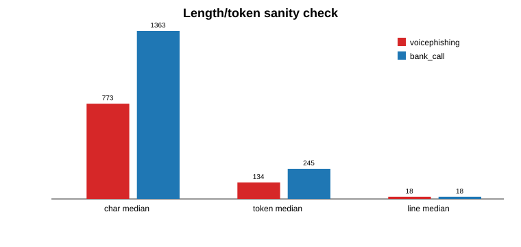

보이스피싱 탐지 시스템은 실제 통화 transcript에 포함된 이름, 주소, 기관명, 계좌번호와 같은 민감 정보를 다루어야 하므로 개인정보 보호와 탐지 성능을 동시에 고려해야 한다. 본 논문은 개인정보 마스킹이 Retrieval-Augmented Generation(RAG) 기반 보이스피싱 탐지 성능에 미치는 영향을 분석하고, 마스킹 환경에서 성능을 회복하기 위한 Advanced RAG 구조를 제안한다. 연구는 1,000개 규모의 hard negative benchmark를 구성하여 원본 Naive RAG, 마스킹 Naive RAG, 마스킹 Advanced RAG를 비교하였다. 평가 결과, retrieval score 기반 threshold 평가에서는 Original Naive RAG 0.8210, Masked Naive RAG 0.5410, Masked Advanced RAG 0.9110의 정확도를 얻었다. LLM 최종 판단을 포함한 end-to-end RAG 평가에서는 Original RAG 0.8940, Masked RAG 0.5130, Masked Advanced RAG 0.9530의 정확도를 얻었다. 이는 개인정보 마스킹이 단순 검색 기반 RAG의 검색 연결 단서를 약화시키지만, 보이스피싱의 구조적 패턴과 정상 금융상담 guard를 활용하면 마스킹 환경에서도 탐지 성능을 회복할 수 있음을 보여준다.
1. 서 론
보이스피싱은 전화, 문자, 메신저 등 다양한 채널을 통해 피해자를 기만하고 금전 이체, 개인정보 입력, 원격 제어 애플리케이션 설치와 같은 행동을 유도하는 대표적인 사회공학 공격이다. 공격자는 수사기관, 금융기관, 가족, 택배사, 대출 상담사 등으로 자신을 위장하고, 피해자에게 긴급성·불안감·책임감을 부여하여 즉시 행동하도록 압박한다. 이러한 공격은 단순한 금칙어 필터나 키워드 탐지만으로는 충분히 구분하기 어렵다. 정상 금융 상담에서도 이상거래, 본인확인, 계좌보호, 앱 확인과 같은 표현이 등장하기 때문이다.
최근 대규모 언어 모델과 Retrieval-Augmented Generation(RAG)을 결합하면 특정 문서 집합에 기반한 판단을 수행할 수 있다. 보이스피싱 탐지에서도 RAG는 통화 transcript와 유사한 사례를 검색하고, 검색된 문맥을 기반으로 yes/no 판단을 수행하는 구조로 활용될 수 있다. 특히 실제 서비스 관점에서는 이전에 수집된 사기 시나리오, 금융기관 안내, 정상 상담 예시 등을 corpus로 유지하고, 새로운 통화 transcript가 들어왔을 때 관련 근거를 찾아 판단하는 방식이 직관적이다.
그러나 보이스피싱 transcript에는 개인정보 또는 개인식별가능정보가 자연스럽게 포함된다. 예를 들어 공격자는 피해자의 이름, 주소, 은행명, 사건번호, 기관명, 계좌번호 등을 언급하여 신뢰를 형성한다. 이러한 정보는 RAG의 검색 단계에서는 강한 단서로 작동할 수 있지만, 실제 시스템에서 그대로 저장하거나 외부 모델에 전달하기에는 개인정보 보호 문제가 존재한다. 따라서 실무적으로는 transcript를 마스킹한 뒤 탐지해야 할 가능성이 높다.
본 연구는 이 지점에서 출발하였다. 이전에 보이스피싱 탐지 MCP server prototype을 제작한 뒤, “민감한 통화 transcript를 다룰 때에도 마스킹을 적용하는 것이 적절한가?”라는 질문이 남았다. 마스킹은 개인정보 보호 측면에서 필요하지만, 동시에 RAG 검색 성능을 떨어뜨릴 수 있다. 본 논문은 이 문제를 실험적으로 확인하고, 마스킹 환경에서도 탐지 성능을 회복하기 위한 Advanced RAG 구조를 설계한다.
2. 관련 연구 및 배경
2.1 RAG 기반 판단
RAG는 외부 지식 또는 문서 집합에서 관련 문맥을 검색한 뒤, 이를 생성 모델의 입력으로 제공하여 응답 품질을 높이는 구조이다 [1]. 일반적인 생성 모델은 질의 자체와 사전학습 지식에 의존해 답변할 수 있지만, RAG는 검색된 근거를 함께 제공함으로써 문서 기반 답변, 질의응답, 요약, 분류 문제에서 활용되어 왔다. 본 연구에서는 RAG를 자유형 답변 생성이 아니라 보이스피싱 여부를 yes/no로 분류하는 의사결정 pipeline으로 사용한다.
RAG에서 검색 단계의 품질은 최종 판단에 큰 영향을 준다. 검색된 문맥이 실제 질의와 잘 연결되어 있으면 LLM은 corpus에 기반한 판단을 수행할 가능성이 높아진다. 반대로 검색된 문맥이 약하거나 질의와 직접 연결되지 않으면 LLM이 query 자체의 표현만 보고 판단하는 문제가 발생할 수 있다. 본 연구의 초기 실험에서도 Naive RAG는 LLM이 retrieved context보다 query에 과도하게 의존하는 경향을 보였다. 따라서 본 연구는 retrieval-only 평가와 end-to-end RAG 평가를 분리하여, 검색 단계 자체의 변화와 최종 LLM 판단의 변화를 함께 관찰하였다.
2.2 보이스피싱 탐지와 개인정보 마스킹
국내 공공기관과 금융기관의 보이스피싱 대응 안내에서는 기관 사칭, 링크 접속 유도, 앱 설치 유도, 인증번호 요구, 계좌이체 요구, 수사·제재 명목 압박 등이 주요 위험 신호로 제시된다 [2]-[4]. 이러한 위험 신호는 단일 키워드가 아니라 대화 흐름 속에서 드러난다. 예를 들어 “보안 점검”이라는 표현은 정상 상담에서도 등장할 수 있지만, 외부 링크 설치와 인증번호 공유 요구가 이어지면 보이스피싱 가능성이 높아진다.
또한 개인정보 마스킹은 탐지 시스템 설계에서 필수적으로 고려해야 한다. 실제 통화 데이터에는 이름, 주소, 직장, 은행, 계좌, 연락처 등 민감 정보가 포함될 수 있고, 이러한 정보를 corpus에 그대로 저장하거나 LLM API에 전달하면 개인정보 보호 위험이 발생한다. 그러나 마스킹은 검색 관점에서 양날의 검이다. 개인정보를 제거하면 안전성은 높아지지만, 질의와 corpus 사이를 연결하던 검색 연결 단서가 사라져 검색 점수가 낮아질 수 있다. 본 연구는 이 trade-off를 핵심 연구 문제로 정의한다.
3. 연구 문제 및 전체 설계
본 연구의 연구 문제는 다음과 같다. 첫째, 개인정보가 유지된 original corpus와 비교할 때 masked corpus 기반 Naive RAG는 성능이 얼마나 하락하는가? 둘째, 마스킹으로 약화된 검색 연결 단서를 보이스피싱의 구조적 패턴으로 보완할 수 있는가? 셋째, 이러한 경향이 LLM을 사용하지 않는 retrieval-only 평가와 LLM 최종 판단을 포함한 end-to-end 평가에서 모두 관찰되는가?
이를 위해 세 가지 pipeline을 구성하였다. 첫 번째는 Original Naive RAG이다. 이 조건은 개인정보가 유지된 original corpus를 검색 대상으로 사용한다. 두 번째는 Masked Naive RAG이다. 검색 구조는 동일하지만 corpus의 개인정보를 강하게 마스킹하여 검색 연결 단서가 줄어든 조건을 만든다. 세 번째는 Masked Advanced RAG이다. 이 조건은 masked corpus를 사용하되, 단순 표면 문자열보다 보이스피싱의 구조적 패턴과 정상 금융상담 guard를 활용하여 검색 및 판단을 보완한다.
개인정보 유지
BM25 score
식별 단서 제거
단서 약화
행동 신호
평가는 두 가지 track으로 나누었다. 첫 번째는 retrieval-only 평가이다. 이 방식은 LLM을 호출하지 않고 BM25 기반 retrieval score에 threshold를 적용하여 yes/no를 결정한다. 이는 LLM 호출 비용, 지연 시간, 모바일 환경의 배터리 부담, 개인정보 외부 전송 부담을 줄일 수 있는 경량 탐지 가능성을 확인하기 위한 목적도 가진다. 두 번째는 end-to-end RAG 평가이다. 이 방식은 검색된 문맥, evidence filter, LLM 최종 판단을 포함하여 실제 RAG pipeline에 가까운 성능을 확인한다.
4. 데이터셋 구축
4.1 Hard negative benchmark
초기에는 보이스피싱, 정상 금융 통화, irrelevant sample을 모두 포함하는 QA 데이터셋을 고려하였다. 그러나 irrelevant sample은 일상 대화나 무관한 안내처럼 보이스피싱과 맥락적으로 거리가 멀어, 대부분 쉽게 no로 분류되는 문제가 있었다. 이러한 easy negative가 많으면 original과 masked 조건의 차이를 명확하게 보기 어렵다. 따라서 최종 평가에서는 실제 혼동 가능성이 큰 voicephishing과 bank_call을 중심으로 hard negative benchmark를 구성하였다.
최종 benchmark는 총 1,000개 샘플로 구성하였다. voicephishing positive sample 500개와 bank_call hard negative sample 500개를 균형 있게 배치하였다. bank_call은 정상 금융기관 상담 흐름을 따르며, 이상거래, 본인확인, 보안 점검, 지급정지, 앱 확인 등의 표현을 포함할 수 있다. 그러나 정상 상담에서는 인증번호 공유 요구, 외부 링크 설치 강요, 원격제어 앱 설치, 제3자 계좌 송금과 같은 사기 유도 행동이 없어야 한다. 이 때문에 bank_call은 단순 irrelevant보다 보이스피싱 탐지에 더 어려운 negative class로 적절하다.
| 구분 | 역할 | 수량 | 설명 |
|---|---|---|---|
| voicephishing | positive | 500 | 사칭, 압박, 링크/앱 설치, 인증번호 요구 등 사기 유도 행동 포함 |
| bank_call | hard negative | 500 | 금융·보안 표현은 유사하지만 정상 상담 절차를 따름 |
| irrelevant | excluded | 0 | 너무 쉽게 no가 되는 샘플이므로 최종 주요 비교에서 제외 |
4.2 Seed scenario와 증강
데이터는 seed scenario를 기반으로 transcript 형식 변형, 표현 변형, speaker label 변형, STT-like noise, single-line 변형 등을 적용해 증강하였다. 따라서 1,000개 샘플은 완전히 독립적으로 사람이 작성한 1,000개 실제 통화가 아니라, 핵심 시나리오를 기반으로 변형한 augmented robustness benchmark로 해석해야 한다. 본 연구는 이 점을 명확히 하고, 결과를 실제 서비스 일반화 성능이 아니라 hard negative 조건에서의 비교 evidence로 사용한다.
보이스피싱 positive sample은 기관 사칭, 이상거래 명목, 보호 절차 명목, 악성 앱 또는 링크 유도, 인증번호 요구, 송금 유도와 같은 행동 신호를 포함하도록 설계하였다. 반면 bank_call은 유사한 금융 용어를 사용하되 공식 앱 직접 확인, 대표번호 재연락, 영업점 방문, 인증번호 공유 금지와 같은 정상 해결 절차를 포함하도록 설계하였다. 이러한 구성은 단순히 특정 단어가 등장했는지보다, 대화가 어떤 행동으로 귀결되는지에 초점을 맞추기 위한 것이다.
5. 개인정보 마스킹 방법
본 연구의 마스킹은 단순히 개인정보를 `[이름]`, `[주소]`와 같은 placeholder로 바꾸는 데서 멈추지 않았다. 최종 실험에서는 placeholder 자체도 의미 있는 단서가 될 수 있다고 판단하였다. 예를 들어 `[기관명]`이라는 토큰은 그 자체로 기관 사칭 문맥을 암시할 수 있다. 따라서 본 연구는 1차 regex 기반 placeholder 마스킹 이후, 주요 placeholder를 deterministic random-like fixed token으로 다시 치환하는 strong masking을 적용하였다.
예를 들어 기관명은 `uiuiufawaefiiifji`, 이름은 `qmqmzkkvvopaa`, 은행명은 `bbbqrrtuuplkz`, 사건번호는 `xxyyqqppmmrrt`, 주소는 `aaeiioouuzzxx`, 직장명은 `ppqqrrssttllm`과 같이 의미를 알 수 없는 문자열로 치환하였다. 이 방식은 동일한 placeholder가 모든 문서에서 같은 의미 단서로 작동하는 것을 줄이고, original corpus와 masked corpus 사이의 검색 연결 단서 차이를 더 명확히 관찰하기 위한 목적을 가진다.
이러한 마스킹은 보이스피싱 탐지에 불리한 조건을 의도적으로 만든다. 즉, original corpus에서는 이름, 기관명, 은행명, 사건번호와 같은 구체적 단서가 query와 retrieved result를 연결하지만, masked corpus에서는 이러한 연결이 약화된다. 본 연구의 핵심은 바로 이 불리한 조건에서 Naive RAG가 실제로 하락하는지, 그리고 Advanced RAG가 개인정보가 아닌 사기 구조를 활용해 성능을 회복할 수 있는지를 확인하는 것이다.
6. RAG Pipeline 구현
6.1 Naive RAG
Naive RAG는 transcript query를 입력받아 corpus에서 유사한 문서를 검색하고, 검색 결과를 기반으로 yes/no를 결정하는 baseline이다. 검색에는 BM25 기반 lexical retrieval을 사용하였다. Original Naive RAG는 개인정보가 유지된 corpus를 사용하고, Masked Naive RAG는 strong masking이 적용된 corpus를 사용한다. 두 조건의 차이는 검색 대상 corpus의 마스킹 여부이며, 이를 통해 마스킹 자체가 retrieval 단계에 주는 영향을 관찰할 수 있다.
초기 end-to-end RAG 실험에서는 LLM이 retrieved context보다 query 자체의 표현에 의존하여 판단하는 문제가 있었다. 예를 들어 query 안에 “수사관”, “계좌”, “인증번호” 같은 표현이 있으면 검색 근거가 약하더라도 LLM이 사전 지식으로 보이스피싱이라고 판단하는 경향이 나타났다. 이는 마스킹이 retrieval에 미치는 영향을 보기 어렵게 만든다. 따라서 본 연구에서는 LLM에 들어가기 전 query와 retrieved result 사이의 공통 identifier 또는 근거 연결성을 확인하는 filter layer를 추가하였다. 연결 근거가 부족한 경우에는 LLM 판단으로 넘어가지 않도록 하여 corpus 의존도를 높였다.
6.2 Advanced RAG
Advanced RAG의 핵심 가정은 “개인정보는 사라져도 사기 행위의 구조는 남아 있다”는 것이다. 보이스피싱은 이름이나 주소만으로 성립하지 않는다. 기관 사칭, 긴급성 부여, 피해자 고립, 링크 또는 앱 설치 유도, 인증번호 요구, 송금 유도, 정상 절차 우회 등이 함께 나타나야 한다. 따라서 Advanced RAG는 개인정보 단서 대신 이러한 구조적 신호를 검색과 reranking에 반영한다.
구체적으로 Advanced RAG는 masked transcript에서 사칭 주체, 위험 명목, 요구 행동, 정상 절차 우회 여부, 피해자 압박, 개인정보 또는 인증정보 요구 여부를 추출한다. 이후 검색 결과에 대해 단순 BM25 score만 사용하지 않고, 사기 행동 패턴과 정상 금융상담 guard를 함께 고려한다. 정상 금융상담 guard는 bank_call이 단순히 금융·보안 용어를 포함했다는 이유로 positive로 분류되는 것을 막기 위한 장치이다. 예를 들어 공식 앱 직접 확인, 대표번호 재연락, 영업점 방문 안내, 인증번호 공유 금지와 같은 표현은 정상 상담 신호로 활용하였다.
random-like token
사칭·압박·행동
정상 절차 구분
7. 실험 방법
7.1 Retrieval-only 평가
Retrieval-only 평가는 LLM을 전혀 사용하지 않고 retrieval score에 threshold를 적용하여 yes/no를 결정한다. 이 평가는 두 가지 의미를 가진다. 첫째, LLM의 사전 지식 또는 query-only 판단을 배제하고 검색 단계만의 변화를 관찰할 수 있다. 둘째, 실제 모바일 또는 실시간 탐지 환경에서 LLM 호출 없이 경량 탐지가 가능한지 확인할 수 있다. 매 통화마다 LLM API를 호출하면 비용과 지연 시간이 발생하고, 온디바이스 LLM을 사용하더라도 배터리와 발열 문제가 생길 수 있다. 따라서 retrieval-only 평가는 실용적 관점에서도 의미가 있다.
각 sample에 대해 top retrieval score를 계산하고, 사전에 정한 threshold 이상이면 yes, 미만이면 no로 분류하였다. Original Naive RAG, Masked Naive RAG, Masked Advanced RAG 각각에 대해 동일한 1,000개 benchmark를 적용하였다. 또한 label별 정확도를 함께 계산하여, 전체 정확도뿐 아니라 voicephishing positive와 bank_call hard negative에서 어떤 오류가 발생하는지 확인하였다.
7.2 End-to-end RAG 평가
End-to-end RAG 평가는 검색 결과와 evidence filter를 거친 뒤 LLM이 최종 yes/no 판단을 수행하는 방식이다. 이 평가는 실제 RAG pipeline에 가까운 결과를 보여준다. 다만 본 연구에서는 LLM이 query 자체에만 의존하는 현상을 줄이기 위해, query와 retrieved result 사이에 공통 근거가 있는지 확인하는 filter layer를 사용하였다. 이 filter는 RAG가 이름뿐만 아니라 계좌, 기관, 사건, 앱 설치, 인증번호 요구와 같은 근거 연결성을 활용하도록 제한한다.
평가 결과는 정확도(accuracy)를 중심으로 정리하였다. 보이스피싱 여부는 binary classification 문제이므로, ground truth가 yes인 voicephishing과 ground truth가 no인 bank_call 각각의 label별 정확도도 함께 제시하였다. 특히 본 연구의 목적은 절대 성능 하나를 주장하는 것이 아니라 original, masked, masked advanced 조건 간의 상대적 차이를 확인하는 것이므로, 동일 benchmark에서 세 조건을 나란히 비교하였다.
8. 실험 결과
8.1 Retrieval-only 결과
표 2는 retrieval score 기반 threshold 평가 결과를 보여준다. Original Naive RAG는 전체 정확도 0.8210을 보였다. 반면 Masked Naive RAG는 0.5410으로 크게 하락하였다. 특히 voicephishing label의 정확도가 0.7040에서 0.1440으로 떨어졌다. 이는 개인정보와 식별 단서가 제거되면서 보이스피싱 positive sample을 검색 단계에서 충분히 끌어올리지 못했음을 의미한다. 반면 bank_call 정확도는 0.9380으로 유지되었는데, 이는 threshold가 주로 positive recall을 잃는 방향으로 작동했기 때문이다.
| Pipeline | Accuracy | Voicephishing | Bank call |
|---|---|---|---|
| Original Naive RAG | 0.8210 | 0.7040 | 0.9380 |
| Masked Naive RAG | 0.5410 | 0.1440 | 0.9380 |
| Masked Advanced RAG | 0.9110 | 0.8840 | 0.9380 |
Masked Advanced RAG는 전체 정확도 0.9110을 기록하여 Masked Naive RAG 대비 크게 회복되었다. voicephishing 정확도도 0.8840까지 상승하였다. 이는 개인정보가 제거된 상태에서도 보이스피싱의 구조적 패턴과 행동 신호를 활용하면 검색 기반 탐지가 가능하다는 점을 보여준다. 또한 이 결과는 LLM 없이 retrieval score만으로도 일정 수준의 탐지 가능성이 있음을 시사한다.
8.2 End-to-end RAG 결과
표 3은 LLM 최종 판단을 포함한 end-to-end RAG 결과이다. Original RAG는 전체 정확도 0.8940을 보였으며, voicephishing 0.9000, bank_call 0.8880으로 비교적 균형 잡힌 결과를 얻었다. Masked RAG는 0.5130으로 하락하였다. 특히 voicephishing 정확도가 0.2060에 그쳐, 마스킹된 환경의 Naive RAG가 positive sample을 충분히 탐지하지 못하는 문제가 확인되었다.
| Pipeline | Accuracy | Voicephishing | Bank call |
|---|---|---|---|
| Original RAG | 0.8940 | 0.9000 | 0.8880 |
| Masked RAG | 0.5130 | 0.2060 | 0.8200 |
| Masked Advanced RAG | 0.9530 | 0.9440 | 0.9620 |
Masked Advanced RAG는 전체 정확도 0.9530을 기록하였다. voicephishing 정확도는 0.9440, bank_call 정확도는 0.9620으로 나타났다. 이는 Advanced RAG가 단순히 yes를 더 많이 예측한 것이 아니라, hard negative인 정상 금융상담도 비교적 잘 구분했음을 의미한다. 특히 정상 금융상담 guard를 통해 공식 앱 확인, 대표번호 재연락, 영업점 방문, 인증번호 공유 금지와 같은 정상 절차 신호를 반영한 것이 false positive 감소에 기여한 것으로 해석된다.
9. 규모 확장 안정성
본 연구는 초기 약 67개 hard binary seed set에서 성능 경향을 확인한 뒤, 이를 335개, 500개, 1,000개 규모로 확장하였다. 확장 과정에서는 transcript 형식 변형, 표현 변형, speaker label 변형 등을 적용하였다. 표 4는 335개, 500개, 1,000개 규모에서 end-to-end RAG 결과가 어떻게 유지되었는지를 보여준다.
| Pipeline | 335 e2e | 500 e2e | 1000 e2e |
|---|---|---|---|
| Original RAG | 0.8955 | 0.8920 | 0.8940 |
| Masked RAG | 0.5134 | 0.5120 | 0.5130 |
| Masked Advanced RAG | 0.9522 | 0.9520 | 0.9530 |
결과는 세 규모에서 거의 동일한 경향을 보였다. Original RAG는 약 0.89 수준을 유지했고, Masked RAG는 약 0.51 수준으로 낮게 유지되었으며, Masked Advanced RAG는 약 0.95 수준을 유지하였다. 이는 최종 결과가 특정 작은 seed set에서만 우연히 발생한 결과라기보다, hard negative benchmark를 증강한 뒤에도 반복적으로 관찰되는 경향임을 보여준다. 다만 증강 데이터는 동일한 seed scenario family에서 파생되었으므로, 이를 완전한 외부 일반화 성능으로 해석해서는 안 된다.
10. 데이터셋 Sanity Check
교수님 피드백을 반영하여, 데이터셋이 특정 생성 규칙이나 표현 패턴에 과도하게 맞춰져 결과가 잘 나온 것은 아닌지 확인하기 위한 sanity check를 수행하였다. 본 연구는 별도의 학습 모델을 훈련한 것이 아니라 RAG pipeline을 구성한 것이므로, 일반적인 train/test overfitting metric을 그대로 적용하기는 어렵다. 대신 label 균형, 명시적 label leakage 여부, cross-label duplicate 여부, 대화 turn 수, hard negative의 금융·보안 표현 포함 여부를 확인하였다.
| 항목 | 확인 결과 | 해석 |
|---|---|---|
| Label balance | voicephishing 500 / bank_call 500 | 한 label에 편중되지 않음 |
| 명시적 label leakage | 0건 | transcript 안에 정답 label이 직접 노출되지 않음 |
| Cross-label duplicate | 0건 | 동일 문장이 양쪽 label에 중복되지 않음 |
| 대화 turn 중앙값 | 두 label 모두 18 | 대화 단위 길이는 유사하게 구성됨 |
| Hard negative 구성 | 금융·보안 용어 포함 | irrelevant보다 혼동 가능성이 높음 |
길이 통계에서는 bank_call의 평균 글자 수와 토큰 수가 voicephishing보다 길게 나타났다. bank_call 평균 글자 수는 약 1,368자, voicephishing 평균 글자 수는 약 752자였으며, 평균 토큰 수는 각각 약 252개와 136개였다. 그러나 대화 turn 수 중앙값은 두 label 모두 18로 유사하였다. 따라서 샘플의 문장 길이 자체는 동일하지 않지만, 대화 교환 구조는 유사하게 유지되었다고 볼 수 있다.

또한 key-term document frequency를 확인한 결과, bank_call에도 “공식”, “대표번호”, “본인확인”, “보안점검”, “이상거래”, “지급정지”와 같은 금융·보안 관련 표현이 다수 포함되어 있었다. 이는 negative sample이 단순한 일상 대화가 아니라 보이스피싱과 표면적으로 유사한 정상 금융상담임을 보여준다. 따라서 본 benchmark는 masked 환경에서 RAG가 단순 금융 키워드가 아니라 사기 유도 행동과 정상 절차의 차이를 구분해야 하는 평가셋으로 설계되었다.
11. 논의
11.1 마스킹의 성능 비용
실험 결과는 개인정보 마스킹이 Naive RAG에 분명한 성능 비용을 만든다는 점을 보여준다. Retrieval-only 평가에서 Masked Naive RAG는 Original Naive RAG 대비 0.2800p 하락했고, end-to-end 평가에서는 Original RAG 대비 0.3810p 하락하였다. 특히 positive sample을 놓치는 false negative가 크게 증가하였다. 이는 개인정보 마스킹이 보이스피싱 탐지 자체를 불가능하게 만든다는 뜻은 아니다. 다만 단순 lexical retrieval에 의존하는 RAG 구조에서는 이름, 기관명, 은행명, 사건번호 같은 검색 연결 단서가 제거될 때 성능 저하가 크다는 것을 의미한다.
이 결과는 개인정보 보호와 탐지 성능 사이의 trade-off를 정량적으로 보여준다. 실제 서비스에서 민감 정보를 보호하기 위해 마스킹을 적용하는 것은 바람직하지만, 마스킹 이후에도 기존 검색 구조를 그대로 사용하면 탐지 성능이 크게 낮아질 수 있다. 따라서 마스킹은 단순 전처리 단계가 아니라 RAG 구조 전체와 함께 설계되어야 한다.
11.2 Advanced RAG의 역할
Advanced RAG는 개인정보 단서가 아닌 보이스피싱의 구조적 패턴을 활용하여 성능을 회복하였다. 특히 Masked Advanced RAG는 end-to-end 평가에서 0.9530의 정확도를 보였고, voicephishing과 bank_call 모두에서 높은 정확도를 기록하였다. 이는 보이스피싱 탐지에서 중요한 신호가 단지 개인 이름이나 기관명이 아니라, “어떤 명목으로 어떤 행동을 요구하는가”에 있다는 점을 보여준다.
예를 들어 정상 금융상담은 본인확인이나 보안점검을 언급할 수 있지만, 인증번호를 상담원에게 알려 달라고 요구하지 않으며, 외부 링크를 통한 보호 모듈 설치를 강요하지 않고, 대표번호 재연락이나 영업점 방문과 같은 안전한 대안을 제공한다. 반면 보이스피싱은 피해자를 고립시키고, 시간 압박을 주며, 정상 절차를 우회하도록 만든다. Advanced RAG는 이러한 구조적 차이를 활용함으로써 masked corpus에서도 탐지 성능을 회복하였다.
11.3 실용적 의미
본 연구는 두 가지 실용적 시사점을 가진다. 첫째, 개인정보 마스킹을 적용한다고 해서 탐지 시스템을 포기할 필요는 없다. 마스킹 환경에 맞춘 retrieval과 guard 설계를 함께 적용하면 성능을 회복할 수 있다. 둘째, retrieval-only track은 경량 탐지 또는 1차 필터로 활용될 가능성이 있다. 모든 통화를 LLM으로 보내는 구조는 비용, 지연, 개인정보 전송 측면에서 부담이 크다. 따라서 retrieval score 기반 1차 탐지 후, 위험도가 높은 경우에만 end-to-end RAG 또는 추가 검증을 수행하는 계층형 구조가 현실적인 방향이 될 수 있다.
12. 구현 및 재현성
본 프로젝트의 구현은 데이터 생성, 마스킹, retrieval 평가, end-to-end batch 평가, sanity check 단계로 나누어 정리하였다. 데이터 생성 단계에서는 hard binary benchmark를 만들고, 추가 500개 증강 데이터를 결합하여 최종 1,000개 평가셋을 구성하였다. 마스킹 단계에서는 `qa_masking.py`와 `strong_masking.py`를 통해 식별 정보를 placeholder로 치환한 뒤, 다시 의미 없는 고정 문자열로 치환하였다. retrieval 단계에서는 `naive_bm25_rag.py`를 중심으로 original, masked, advanced 조건의 score를 계산하였다.
재현성 측면에서 중요한 점은 세 pipeline이 동일한 평가셋을 사용한다는 것이다. 동일한 1,000개 transcript에 대해 original corpus, masked corpus, masked advanced setting만 바꾸어 비교하였기 때문에, 성능 차이는 평가 대상 샘플 차이가 아니라 pipeline 조건 차이에서 발생한다. 또한 same-source sample이 직접 검색되어 정답을 맞히는 상황을 줄이기 위해 retrieval 과정에서 같은 source sample 직접 matching을 제외하였다. 이는 증강 데이터 benchmark에서 특히 중요한 통제 조건이다.
| 단계 | 주요 파일 | 역할 |
|---|---|---|
| 데이터 생성 | build_expanded_hard_benchmark_500.py build_expanded_hard_benchmark_extra_500.py | hard benchmark 500개 및 추가 500개 생성 |
| 마스킹 | qa_masking.py strong_masking.py | 개인정보 placeholder 및 random-like token 치환 |
| 검색 평가 | naive_bm25_rag.py | BM25 retrieval score 및 threshold 기반 판단 |
| Sanity check | analyze_dataset_sanity.py make_sanity_svgs.py | label 분포, 길이, leakage, 결과 요약 분석 |
최종 산출물은 코드 저장소, 평가 CSV, 발표자료, 보고서로 구성된다. 평가 결과 CSV에는 각 pipeline별 예측 결과가 저장되어 있어, 단순히 최종 accuracy만 확인하는 것이 아니라 어떤 label에서 오류가 발생했는지도 확인할 수 있다. 이러한 구조는 최종 발표 이후에도 threshold 조정, ablation study, 추가 데이터 증강을 이어가기 쉽게 하기 위한 것이다.
13. 사례 기반 해석
본 연구에서 가장 중요한 오류 양상은 Masked Naive RAG가 voicephishing positive를 no로 놓치는 경우이다. original corpus에서는 피해자 이름, 은행명, 기관명, 사건번호 등이 query와 corpus를 연결하는 단서로 작동한다. 그러나 strong masking 이후에는 이러한 단서가 의미 없는 문자열로 바뀌며, 검색기는 동일한 사기 구조를 가진 문서보다 표면적으로 일부 금융 용어가 겹치는 문서를 선택할 수 있다. 이 경우 LLM에 충분한 근거가 전달되지 않거나, filter layer에서 근거 부족으로 차단되어 false negative가 발생한다.
반대로 Advanced RAG는 개인정보 단서가 약해진 상황에서 행동 중심의 evidence를 찾는다. 예를 들어 “보호 모듈 설치”, “전용 페이지 접속”, “6자리 확인번호 입력”, “통화를 끊지 말라”, “대표번호로 확인하지 말라”와 같은 흐름은 개인정보가 없어도 사기 구조를 강하게 암시한다. 이러한 신호가 retrieval 또는 reranking에 반영되면 masked transcript에서도 관련 보이스피싱 사례가 상위에 위치할 가능성이 높아진다.
bank_call hard negative의 사례도 중요하다. 정상 금융상담은 “이상거래”, “보안점검”, “본인확인”, “지급정지” 같은 단어를 포함할 수 있다. 만약 탐지기가 이러한 단어만 보고 yes를 예측한다면 false positive가 증가한다. 본 연구의 Advanced RAG는 정상 상담 guard를 통해 “인증번호는 알려주지 않아도 된다”, “공식 앱에서 직접 확인하라”, “대표번호로 다시 연락하라”, “영업점 방문이 가능하다”와 같은 안전 절차를 negative 근거로 활용하였다. 이 때문에 masked advanced 조건에서 bank_call 정확도도 0.9620으로 높게 유지되었다.
따라서 본 연구의 핵심 결과는 특정 단어 목록을 잘 만든 데서만 나온 것이 아니다. 오히려 normal bank call과 voicephishing이 공유하는 금융·보안 표현을 인정한 뒤, 최종적으로 사용자를 어떤 행동으로 유도하는지에 초점을 맞춘 점이 중요하다. 이 관점은 향후 실제 통화 데이터로 확장할 때도 유용하다. 실제 공격자는 계속 새로운 표현을 사용하겠지만, 정상 절차 우회와 위험 행동 유도라는 구조는 비교적 안정적으로 유지될 가능성이 높기 때문이다.
14. 한계 및 향후 연구
본 연구에는 몇 가지 한계가 있다. 첫째, 최종 benchmark는 seed scenario 기반 증강 데이터이다. 따라서 1,000개라는 규모가 곧 1,000개의 완전히 독립적인 실제 통화를 의미하지는 않는다. 본 결과는 hard negative 조건에서 original, masked, masked advanced 조건을 비교한 evidence로 해석하는 것이 적절하다. 향후 실제 상담 데이터 또는 공개 가능한 비식별 실제 사례를 활용한 외부 검증이 필요하다.
둘째, 본 연구는 STT 모델 자체를 평가하지 않았다. 실제 서비스에서는 음성 통화가 STT를 거쳐 transcript로 변환되며, STT 오류가 탐지 성능에 영향을 줄 수 있다. 본 연구에서는 transcript 이후 RAG 탐지 문제에 집중하였으므로, 향후에는 STT noise, 화자 분리 오류, 비문, 중복 발화, 방언 또는 통화 품질 저하를 반영한 평가가 필요하다.
셋째, Advanced RAG의 각 구성 요소가 성능 향상에 얼마나 기여했는지에 대한 ablation study는 추가로 수행할 필요가 있다. 예를 들어 pattern extraction만 사용하는 경우, normal bank-call guard만 사용하는 경우, reranking threshold를 조정하는 경우를 나누어 비교하면 어떤 요소가 가장 중요한지 더 명확하게 설명할 수 있다. 또한 threshold calibration을 통해 실제 서비스에서 false positive와 false negative의 균형을 조정하는 연구도 필요하다.
15. 결 론
본 논문은 개인정보 마스킹 환경에서 RAG 기반 보이스피싱 탐지 성능이 어떻게 변화하는지 분석하였다. 1,000개 규모의 voicephishing vs bank_call hard negative benchmark를 구성하고, Original Naive RAG, Masked Naive RAG, Masked Advanced RAG를 retrieval-only와 end-to-end 두 평가 track에서 비교하였다. 실험 결과, 마스킹된 Naive RAG는 original 조건 대비 성능이 크게 하락하였다. 이는 개인정보와 식별 단서가 RAG 검색 단계에서 중요한 연결 단서로 작동했음을 보여준다.
반면 Masked Advanced RAG는 개인정보 단서 대신 보이스피싱의 구조적 패턴, 사기 유도 행동, 정상 금융상담 guard를 활용하여 성능을 회복하였다. End-to-end RAG 기준으로 Original RAG는 0.8940, Masked RAG는 0.5130, Masked Advanced RAG는 0.9530의 정확도를 보였다. 따라서 본 연구는 개인정보 마스킹을 적용하더라도, RAG 구조를 마스킹 환경에 맞게 설계하면 보이스피싱 탐지 성능을 유지하거나 회복할 수 있음을 보였다.
서비스 적용 관점에서는 본 연구의 결과를 단일 모델 구조가 아니라 계층형 탐지 구조로 해석할 수 있다. 먼저 retrieval-only 방식은 비용이 낮고 빠르게 계산할 수 있으므로 1차 위험도 산정에 활용할 수 있다. 이후 위험도가 높은 transcript에 대해서만 end-to-end RAG 판단을 수행하면, 모든 입력에 대해 LLM을 호출하는 방식보다 비용과 지연을 줄일 수 있다. 또한 개인정보 마스킹을 먼저 적용한 뒤 탐지하는 구조는 transcript 보관과 외부 API 전달에 따른 부담을 낮추는 데 도움이 된다.
또한 본 연구는 보이스피싱 탐지에서 “개인정보가 탐지 성능에 도움이 되는가”와 “그럼에도 개인정보를 제거해야 하는가”라는 질문을 분리해서 볼 필요가 있음을 보여준다. Original RAG의 성능이 높은 것은 식별 단서가 검색에 도움이 된다는 점을 의미한다. 그러나 실제 시스템에서는 이러한 단서를 그대로 사용하는 것이 항상 적절하지 않다. 따라서 중요한 것은 개인정보를 유지하는 방식이 아니라, 개인정보가 제거된 뒤에도 사기 유도 행동과 정상 절차의 차이를 찾아낼 수 있는 구조를 만드는 것이다. 본 연구의 Masked Advanced RAG는 이 방향의 가능성을 보인 prototype이라고 볼 수 있다.
향후 연구에서는 실제 통화 데이터 기반 검증, STT noise 반영, Advanced RAG 구성 요소별 ablation, 실시간 threshold calibration을 진행할 계획이다. 또한 본 연구의 결과를 바탕으로 개인정보 보호를 전제로 한 보이스피싱 탐지 데모 시스템과 사용자 경고 흐름을 연결하면, 실제 모바일 보안 환경에서도 활용 가능한 방향으로 확장할 수 있을 것이다.
참 고 문 헌
[1] Patrick Lewis, Ethan Perez, Aleksandara Piktus, Fabio Petroni, Vladimir Karpukhin, Naman Goyal, Heinrich Kuhn, Mike Lewis, Wen-tau Yih, Tim Rocktaschel, Sebastian Riedel, and Douwe Kiela, “Retrieval-Augmented Generation for Knowledge-Intensive NLP Tasks,” 2020.
[2] 금융위원회, 보이스피싱 대응 관련 안내 자료, https://www.fsc.go.kr/no010101/86250
[3] 한국인터넷진흥원(KISA), 보이스피싱 및 스미싱 대응 안내 자료, https://www.kisa.or.kr/1020601
[4] 하나은행, 금융사기 및 보이스피싱 예방 안내 자료, https://www.kebhana.com/cont/news/news01/1496774_115430.jsp
[5] 금융감독원, 보이스피싱 피해 예방 및 금융소비자 보호 관련 안내 자료.